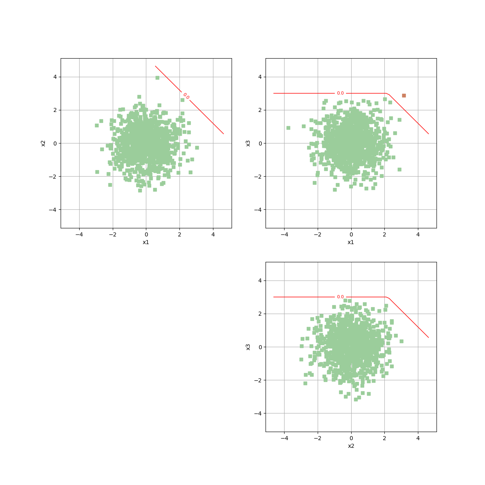
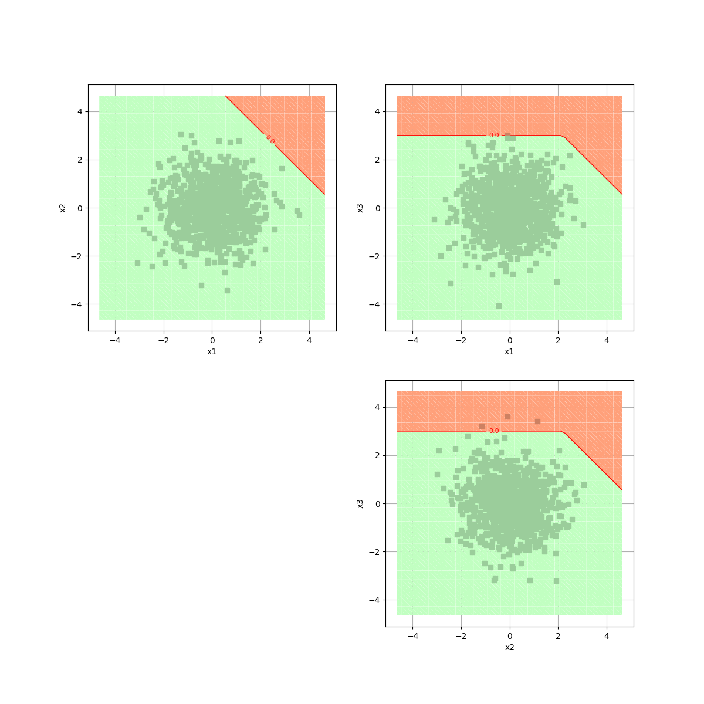
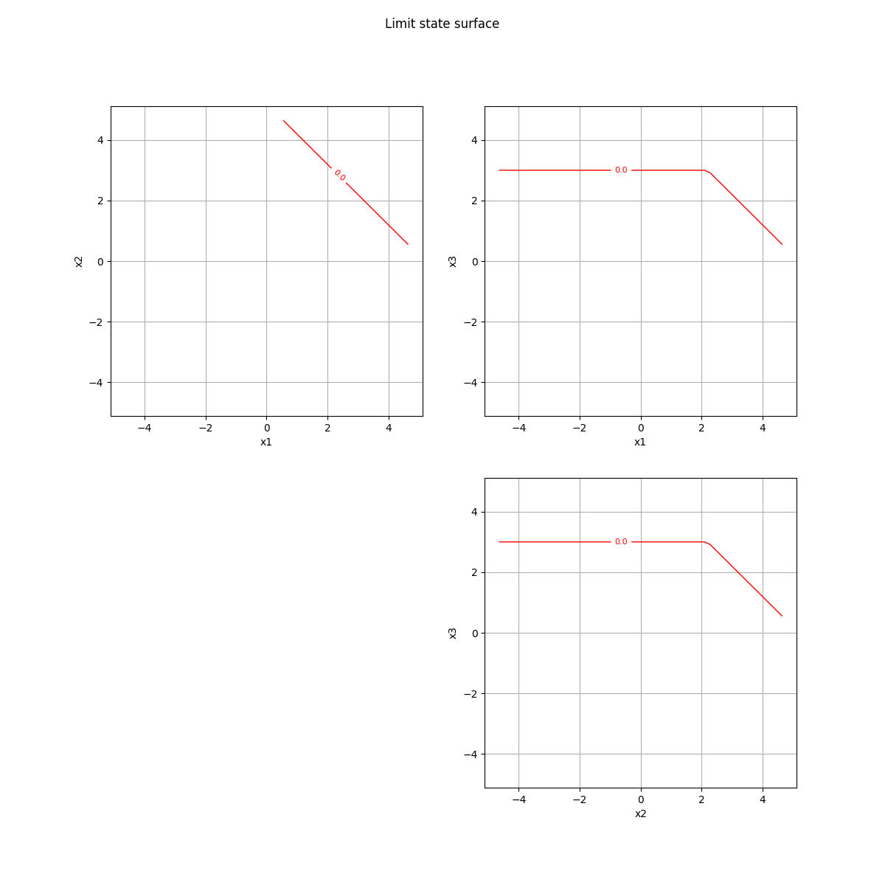
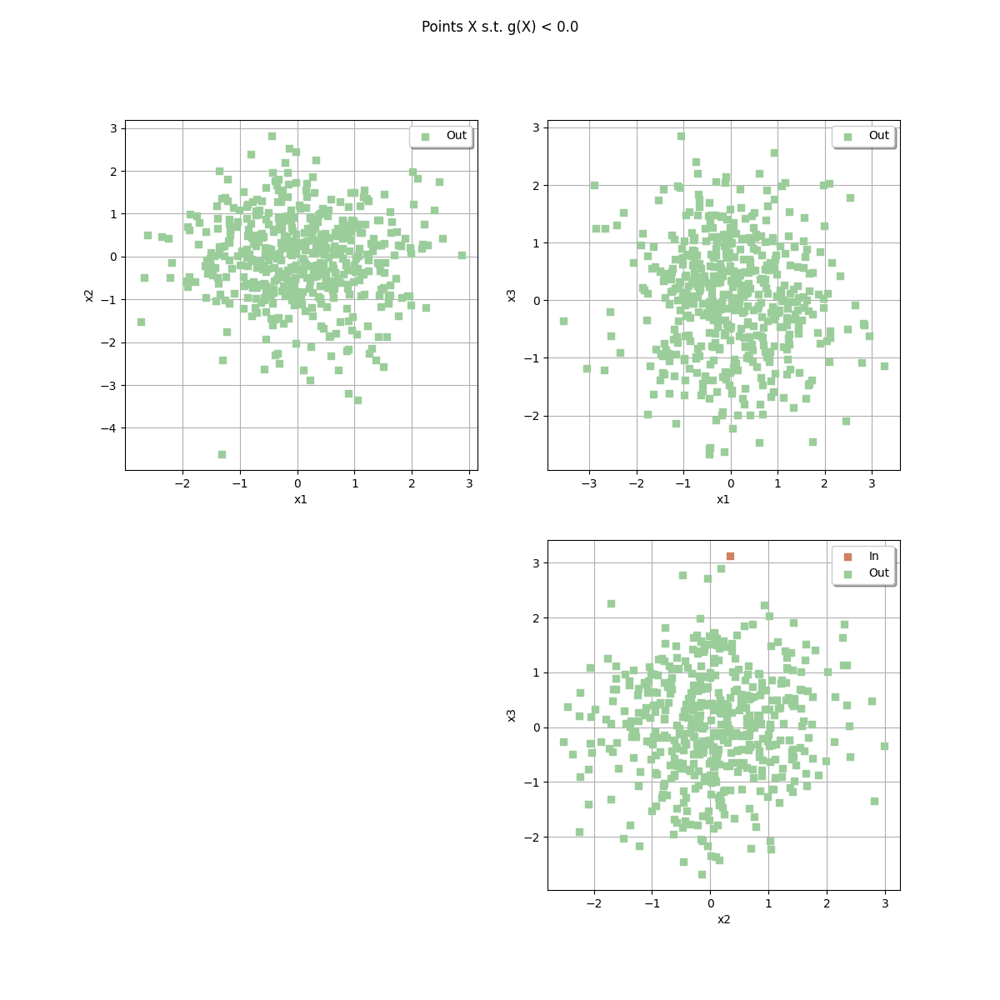
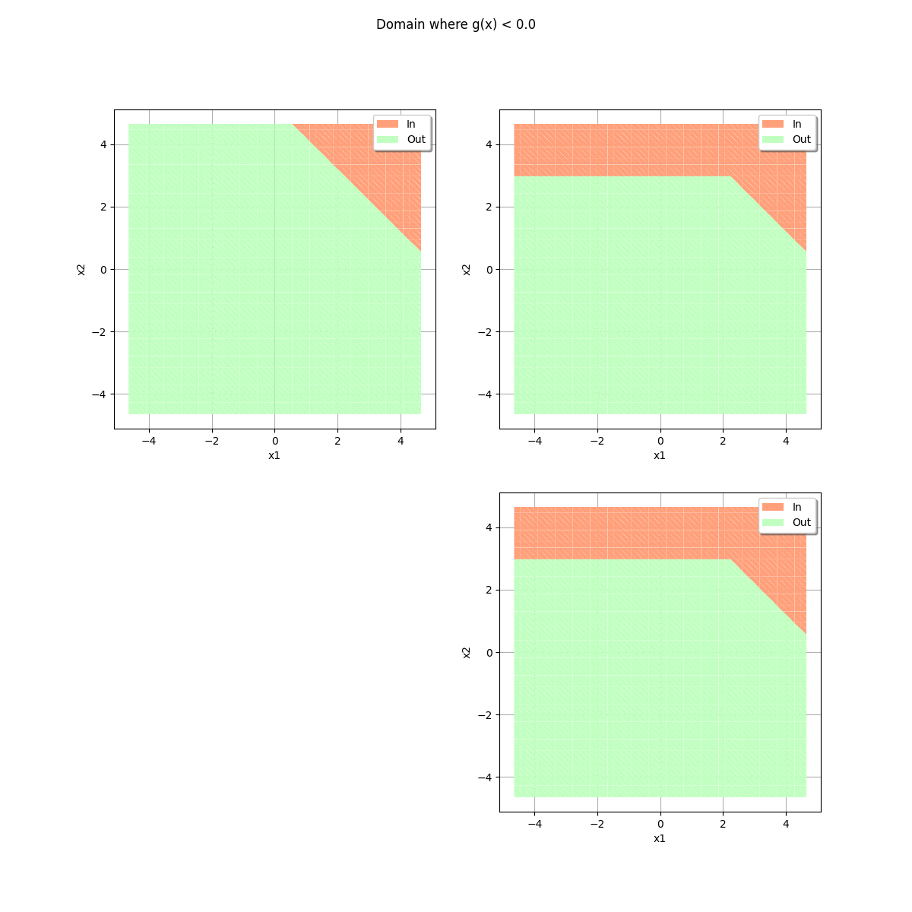
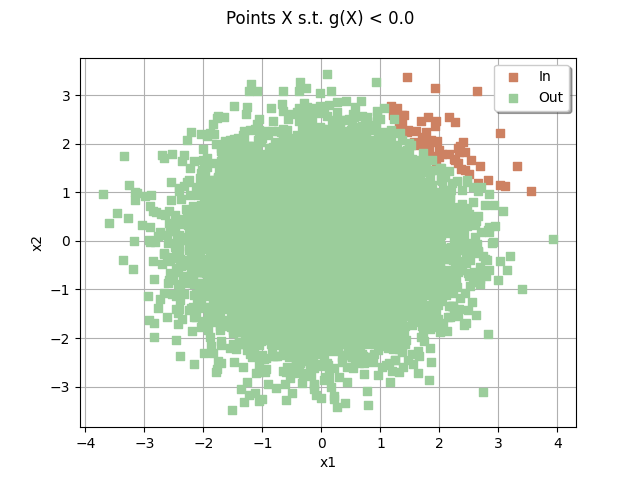
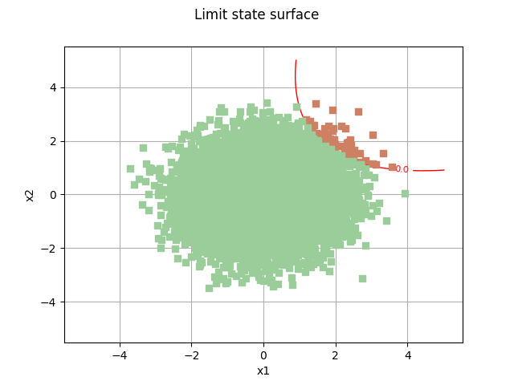
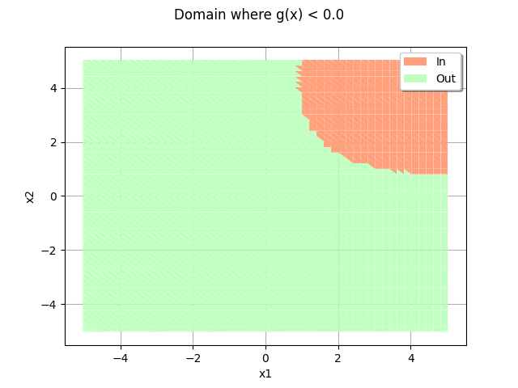
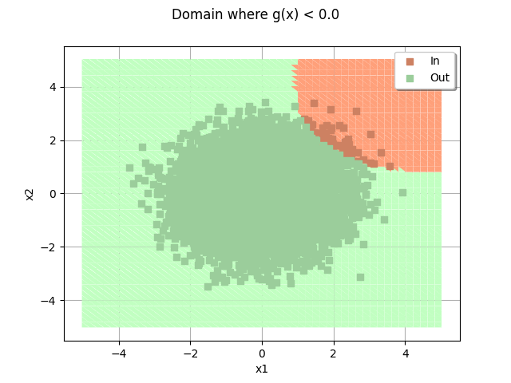

Note
Go to the end to download the full example code.
Demonstration of the DrawEvent class¶
import otbenchmark as otb
import openturns.viewer as otv
3D problem¶
problem = otb.ReliabilityProblem33()
event = problem.getEvent()
g = event.getFunction()
inputVector = event.getAntecedent()
distribution = inputVector.getDistribution()
inputDimension = distribution.getDimension()
inputDimension
3
alpha = 1 - 0.00001
bounds, marginalProb = distribution.computeMinimumVolumeIntervalWithMarginalProbability(
alpha
)
referencePoint = distribution.getMean()
referencePoint
inputVector = event.getAntecedent()
event = problem.getEvent()
g = event.getFunction()
drawEvent = otb.DrawEvent(event)
The highest level method is the draw method which flags allow to gather various graphics into a single one.
_ = drawEvent.draw(bounds)

_ = drawEvent.draw(bounds, fillEvent=True)

The drawLimitState method only draws the limit state.
_ = drawEvent.drawLimitState(bounds)

The drawSample method plots a sample with a color code which specifies which points are inside or outside the event.
sampleSize = 500
_ = drawEvent.drawSample(sampleSize)

_ = drawEvent.fillEvent(bounds)

2D problem¶
When the problem has 2 dimensions, single cross-cuts are sufficient. This is why we use the *CrossCut methods.
problem = otb.ReliabilityProblem22()
event = problem.getEvent()
g = event.getFunction()
inputVector = event.getAntecedent()
distribution = inputVector.getDistribution()
bounds, marginalProb = distribution.computeMinimumVolumeIntervalWithMarginalProbability(
1.0 - 1.0e-6
)
sampleSize = 10000
drawEvent = otb.DrawEvent(event)
cloud = drawEvent.drawSampleCrossCut(sampleSize)
_ = otv.View(cloud)

graph = drawEvent.drawLimitStateCrossCut(bounds)
graph.add(cloud)
_ = otv.View(graph)

domain = drawEvent.fillEventCrossCut(bounds)
_ = otv.View(domain)

domain.add(cloud)
_ = otv.View(domain)

For a 2D sample, it is sometimes handy to re-use a precomputed sample. In this case, we can use the drawInputOutputSample method.
inputSample = distribution.getSample(sampleSize)
outputSample = g(inputSample)
drawEvent.drawInputOutputSample(inputSample, outputSample)
class=Graph name=Points X s.t. g(X) < 0.0 implementation=class=GraphImplementation name=Points X s.t. g(X) < 0.0 title=Points X s.t. g(X) < 0.0 xTitle=x1 yTitle=x2 axes=ON grid=ON legendposition=topright legendFontSize=1 drawables=[class=Drawable name=In implementation=class=Cloud name=In derived from class=DrawableImplementation name=In legend=In data=class=Sample name=Unnamed implementation=class=SampleImplementation name=Unnamed size=48 dimension=2 data=[[1.75206,2.1331],[2.65402,1.25186],[3.05344,1.37844],[1.51339,2.51736],[2.54761,1.37642],[2.12316,2.55392],[2.9651,1.10725],[1.56455,2.53366],[1.25938,2.77634],[1.23662,2.82189],[2.59475,1.45159],[1.99746,2.53124],[2.14658,1.89942],[2.13898,1.76489],[2.80095,1.14849],[1.42333,2.50344],[1.99307,1.70834],[2.23565,2.336],[2.30481,2.06017],[2.76317,2.07778],[2.05894,1.8149],[2.06568,1.57253],[2.00174,1.65279],[1.83384,2.53628],[2.2881,1.73489],[1.22935,2.86777],[1.72694,2.19741],[2.66474,1.49464],[1.95762,1.64623],[2.33063,1.58673],[2.5289,1.45325],[1.91649,2.14158],[1.37821,2.3388],[1.32028,2.72169],[1.97745,1.67481],[2.35367,1.72189],[1.94211,2.20454],[2.44141,2.16931],[1.88873,1.90417],[3.05892,2.42918],[2.10954,2.835],[1.74686,1.89147],[1.31915,3.10624],[1.46469,2.3849],[2.32639,1.46009],[2.85151,1.6471],[2.47383,2.06196],[2.64109,1.62487]] color=lightsalmon3 isColorExplicitlySet=true fillStyle=solid lineStyle=solid pointStyle=fsquare lineWidth=1,class=Drawable name=Out implementation=class=Cloud name=Out derived from class=DrawableImplementation name=Out legend=Out data=class=Sample name=Unnamed implementation=class=SampleImplementation name=Unnamed size=9952 dimension=2 data=[[0.83378,-1.49686],[-1.03462,-0.611822],[2.66921,-0.140542],...,[1.3881,-0.559157],[-1.22664,0.216045],[0.683437,0.589782]] color=darkseagreen3 isColorExplicitlySet=true fillStyle=solid lineStyle=solid pointStyle=fsquare lineWidth=1]
otv.View.ShowAll()
Total running time of the script: (0 minutes 8.199 seconds)